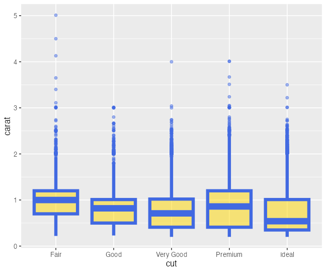
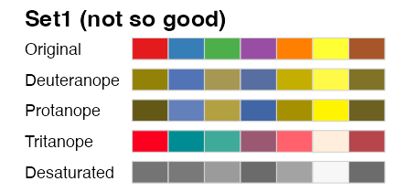
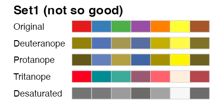

Hands-on Introduction to R 2023
- Introduction: what is data analysis and R basics
- Data visualization and reporting
- Data transformation 1: extract, summarize
- Data transformation 2: join, pivot
- Data cleansing and conversion: numbers, text
- Data input and interpretation
- Statistical modeling 1: probability distribution, likelihood
- Statistical modeling 2: linear regression
https://heavywatal.github.io/slides/english2023r/
Outline of data analysis
- Setup computer environment
- Get and read input data
- Exploratory data analysis
- Preparation (harder than it seems) üëà lecture #3–5
- Visualization, generating hypotheses (fun!) üëà today
- Statistical analysis, testing hypotheses
- Report

Visualization helps overviewing data structure
Reduction and reorganization of information → intuitive understanding

The larger carat, the higher price.
The slope seems to differ by clarity.
Never trust summary statics alone
Interesting relationships may be overlooked without visualization.


Visualization requires an innate sense of beauty?


NO!
To some extent,
it is about knowledge and skills.
You can improve it
once you know the basic design rules.
Today’s lesson: data visualization and reporting with R
✅ Outline of data analysis: visualization is important
⬜ Draw graphs in a consistent manner with ggplot2
⬜ Embed R code and results into a report with Quarto
iris: an example dataset
4 numeric and 1 factor vectors with the length of 150:
print(iris)
Sepal.Length Sepal.Width Petal.Length Petal.Width Species
1 5.1 3.5 1.4 0.2 setosa
2 4.9 3.0 1.4 0.2 setosa
3 4.7 3.2 1.3 0.2 setosa
4 4.6 3.1 1.5 0.2 setosa
--
147 6.3 2.5 5.0 1.9 virginica
148 6.5 3.0 5.2 2.0 virginica
149 6.2 3.4 5.4 2.3 virginica
150 5.9 3.0 5.1 1.8 virginica
Base R graphics
inconsistent and difficult to customize details.
boxplot(Petal.Width ~ Species, data = iris)
plot(iris$Sepal.Length, iris$Sepal.Width)
hist(iris$Petal.Length)


Any useful package to draw beautiful graphs easily?
ggplot2: a tidyverse member in charge of graphics

- can draw many types of graphs in a rational and consistent manner.
- based on “The Grammar of Graphics” (Wilkinson 2005).

ggplot2: a tidyverse member in charge of graphics
- can draw many types of graphs in a rational and consistent manner.
- based on “The Grammar of Graphics” (Wilkinson 2005).


Learn ggplot2 without knowing base R graphics
No problem. Underlying systems are fundamentally different:

Basic usage: join layers with + operator

Basic usage: join layers with + operator
ggplot(data = diamonds) # prepare canvas with diamonds data
# aes(x = carat, y = price) + # map (carat, price) to (x, y) axes
# geom_point() + # draw scatter plot
# facet_wrap(vars(clarity)) + # split panels according to clarity
# stat_smooth(method = lm) + # add linear regression
# coord_cartesian(ylim = c(0, 2e4)) + # adjust y-axis range
# theme_classic(base_size = 20) # adjust non-data components
Basic usage: join layers with + operator
ggplot(data = diamonds) + # prepare canvas with diamonds data
aes(x = carat, y = price) # map (carat, price) to (x, y) axes
# geom_point() + # draw scatter plot
# facet_wrap(vars(clarity)) + # split panels according to clarity
# stat_smooth(method = lm) + # add linear regression
# coord_cartesian(ylim = c(0, 2e4)) + # adjust y-axis range
# theme_classic(base_size = 20) # adjust non-data components
Basic usage: join layers with + operator
ggplot(data = diamonds) + # prepare canvas with diamonds data
aes(x = carat, y = price) + # map (carat, price) to (x, y) axes
geom_point() # draw scatter plot
# facet_wrap(vars(clarity)) + # split panels according to clarity
# stat_smooth(method = lm) + # add linear regression
# coord_cartesian(ylim = c(0, 2e4)) + # adjust y-axis range
# theme_classic(base_size = 20) # adjust non-data components
Basic usage: join layers with + operator
ggplot(data = diamonds) + # prepare canvas with diamonds data
aes(x = carat, y = price) + # map (carat, price) to (x, y) axes
geom_point() + # draw scatter plot
facet_wrap(vars(clarity)) # split panels according to clarity
# stat_smooth(method = lm) + # add linear regression
# coord_cartesian(ylim = c(0, 2e4)) + # adjust y-axis range
# theme_classic(base_size = 20) # adjust non-data components
Basic usage: join layers with + operator
ggplot(data = diamonds) + # prepare canvas with diamonds data
aes(x = carat, y = price) + # map (carat, price) to (x, y) axes
geom_point() + # draw scatter plot
facet_wrap(vars(clarity)) + # split panels according to clarity
stat_smooth(method = lm) # add linear regression
# coord_cartesian(ylim = c(0, 2e4)) + # adjust y-axis range
# theme_classic(base_size = 20) # adjust non-data components
Basic usage: join layers with + operator
ggplot(data = diamonds) + # prepare canvas with diamonds data
aes(x = carat, y = price) + # map (carat, price) to (x, y) axes
geom_point() + # draw scatter plot
facet_wrap(vars(clarity)) + # split panels according to clarity
stat_smooth(method = lm) + # add linear regression
coord_cartesian(ylim = c(0, 2e4)) # adjust y-axis range
# theme_classic(base_size = 20) # adjust non-data components
Basic usage: join layers with + operator
ggplot(data = diamonds) + # prepare canvas with diamonds data
aes(x = carat, y = price) + # map (carat, price) to (x, y) axes
geom_point() + # draw scatter plot
facet_wrap(vars(clarity)) + # split panels according to clarity
stat_smooth(method = lm) + # add linear regression
coord_cartesian(ylim = c(0, 2e4)) + # adjust y-axis range
theme_classic(base_size = 20) # adjust non-data components
Basic usage: join layers with + operator
ggplot(data = diamonds) + # prepare canvas with diamonds data
aes(x = carat, y = price) + # map (carat, price) to (x, y) axes
geom_point() + # draw scatter plot
# facet_wrap(vars(clarity)) + # split panels according to clarity
# stat_smooth(method = lm) + # add linear regression
# coord_cartesian(ylim = c(0, 2e4)) + # adjust y-axis range
theme_classic(base_size = 20) # adjust non-data components

Intermediate states can be saved as objects
p1 = ggplot(data = diamonds)
p2 = p1 + aes(x = carat, y = price)
p3 = p2 + geom_point()
p4 = p3 + facet_wrap(vars(clarity))
print(p3)
We are going to use this p3 later.
Let’s try ggplot
using mpg, a dataset of fuel economy:
manufacturer model displ year cyl trans drv cty hwy fl class
1 audi a4 1.8 1999 4 auto(l5) f 18 29 p compact
2 audi a4 1.8 1999 4 manual(m5) f 21 29 p compact
--
233 volkswagen passat 2.8 1999 6 manual(m5) f 18 26 p midsize
234 volkswagen passat 3.6 2008 6 auto(s6) f 17 26 p midsize
üî∞ Scatter-plot the relationship of displ and cty
(engine displacement in litres and city miles per gallon)
Common errors
No function is named ggplot2:
> ggplot2(diamonds)
Error in ggplot2(diamonds) : could not find function "ggplot2"
ggplot2 is a package, which has a function named ggplot.
OK, but still R cannot find the function:
> ggplot(diamonds)
Error in ggplot(diamonds) : could not find function "ggplot"
Don’t forget to load the package every time you launch R/RStudio:
library(conflicted) # charm for safe coding
library(tidyverse) # load packages including ggplot2
ggplot(diamonds) # OK!
ggplot() requires “tidy data”
- Each column is a variable.
- Each row is an observation.
- Each cell is a single value.
print(diamonds)
carat cut color clarity depth table price x y z
1 0.23 Ideal E SI2 61.5 55 326 3.95 3.98 2.43
2 0.21 Premium E SI1 59.8 61 326 3.89 3.84 2.31
3 0.23 Good E VS1 56.9 65 327 4.05 4.07 2.31
4 0.29 Premium I VS2 62.4 58 334 4.20 4.23 2.63
--
53937 0.72 Good D SI1 63.1 55 2757 5.69 5.75 3.61
53938 0.70 Very Good D SI1 62.8 60 2757 5.66 5.68 3.56
53939 0.86 Premium H SI2 61.0 58 2757 6.15 6.12 3.74
53940 0.75 Ideal D SI2 62.2 55 2757 5.83 5.87 3.64
Map variables to aesthetics
by specifying column names in aes():
ggplot(diamonds) +
aes(x = carat, y = price) +
geom_point(mapping = aes(color = clarity, size = cut))
Set constant/independent aesthetics
by specifying values out of aes():
ggplot(diamonds) +
aes(x = carat, y = price) +
geom_point(color = "darkorange", size = 6, alpha = 0.4)
Outer aes() propagates to all geom_*()
ggplot(diamonds) +
aes(x = carat, y = price) +
geom_point(aes(color = clarity)) +
geom_line() # NO color
ggplot(diamonds) +
aes(x = carat, y = price, color = clarity) +
geom_point() + # color
geom_line() # color
aesthetics list
- Color related
color: outline color of points, lines, and charactersfill: fill color of shapesalpha: opacity (0 = transparent, 1 = opaque)
- Differentiation related
- Grouping
group: to separate lines and polygons
- Position related
x,y,xmin,xmax,ymin,ymax,xend,yend
color for points, lines, characters; fill for areas
alpha for opacity.
ggplot(diamonds) +
aes(cut, carat) +
geom_boxplot(color = "royalblue", fill = "gold", alpha = 0.5, linewidth = 2)

Practice to change colors
using mpg, a dataset of fuel economy:
manufacturer model displ year cyl trans drv cty hwy fl class
1 audi a4 1.8 1999 4 auto(l5) f 18 29 p compact
2 audi a4 1.8 1999 4 manual(m5) f 21 29 p compact
--
233 volkswagen passat 2.8 1999 6 manual(m5) f 18 26 p midsize
234 volkswagen passat 3.6 2008 6 auto(s6) f 17 26 p midsize
üî∞ Draw scatter plot of displ and cty with blue points.
üî∞ Color-code points according to drv and cyl (drive train and # of cylinders).
Diversity in color vision
The previous graph with 3 colors,
red
green
blue, is no problem for many people.
But for ~5% people, it looks like two-color:
red
green
blue or
red
green
blue.
You can simulate color vision with a Mac/iOS app, Sim Daltonism.
Color Oracle is a Windows app.
Some palettes are designed with consideration
Sequential palette:

Diverging palette:
Qualitative (categorical, discrete) palette:
 

Change color palette with scale_color_*()
viridis
and
ColorBrewer
are included in ggplot2.
Find names from the link above, and specify it with option = or palette =.
ggplot(diamonds) + aes(carat, price) +
geom_point(mapping = aes(color = clarity)) +
scale_color_viridis_d(option = "inferno")
# scale_color_brewer(palette = "YlGnBu")
Distinguish continuous and discrete variables
and choose a scale_* function accordingly, or you will get
Error: Continuous value supplied to discrete scale
ggplot(diamonds) + aes(carat, price) +
geom_point(mapping = aes(color = price)) +
scale_color_viridis_c(option = "inferno")
# scale_color_distiller(palette = "YlGnBu")
- discrete:
scale_color_viridis_d(),scale_color_brewer() - continuous:
scale_color_viridis_c(),scale_color_distiller() - binned:
scale_color_viridis_b(),scale_color_fermenter()
Useful palettes other than viridis and brewer
Try built-in palette.colors() and
colorspace package.
okabe_ito = palette.colors(9L, "Okabe-Ito")
ggplot(mpg) +
aes(x = displ, y = cty) +
geom_point(aes(color = drv), size = 4, alpha = 0.66) +
scale_color_discrete(type = unname(okabe_ito)[-1])
# scale_color_discrete(type = palette.colors(8L, "R4")[-1])
# colorspace::scale_colour_discrete_divergingx("Zissou 1")
These palettes are carefully designed.
Global options to omit scale_color_*
An example setting to use viridis and Okabe-ito by default:
grDevices::palette("Okabe-Ito")
options(
ggplot2.continuous.colour = "viridis",
ggplot2.continuous.fill = "viridis",
ggplot2.discrete.colour = grDevices::palette()[-1],
ggplot2.discrete.fill = grDevices::palette()[-1]
)
Settings by options() are effective until an R session ends.
Facet: splitting a plot into a sequence of panels
One of the biggest benefits of using ggplot!
p3 + facet_wrap(vars(clarity), ncol = 4L)
Facet: splitting a plot into a 2d grid of panels
One of the biggest benefits of using ggplot!
p3 + facet_grid(vars(clarity), vars(cut))
Overviewing multivariate data with “aes” + “facet”

Practice of faceting
using mpg, a dataset of fuel economy:
manufacturer model displ year cyl trans drv cty hwy fl class
1 audi a4 1.8 1999 4 auto(l5) f 18 29 p compact
2 audi a4 1.8 1999 4 manual(m5) f 21 29 p compact
--
233 volkswagen passat 2.8 1999 6 manual(m5) f 18 26 p midsize
234 volkswagen passat 3.6 2008 6 auto(s6) f 17 26 p midsize
üî∞ Try faceting by drv, cyl, and both.
Modify coordinate axes with scale_*, coord_*
ggplot(diamonds) + aes(carat, price) + geom_point(alpha = 0.25) +
scale_x_log10() +
scale_y_log10(breaks = c(1, 2, 5, 10) * 1000) +
coord_cartesian(xlim = c(0.1, 10), ylim = c(800, 12000)) +
labs(title = "Diamonds", x = "Size (carat)", y = "Price (USD)")
Customize non-data components with theme
Choose a complete theme_*(),
and adjust each element with theme().
p3 + theme_bw(base_size = 18) + theme(
panel.background = element_rect(fill = "khaki"), # box
panel.grid = element_line(color = "royalblue"),
axis.title.x = element_text(size = 32),
axis.text.y = element_blank() # remove
)

Basic usage: join layers with + operator
Combine separate plots into one as in papers
with the help of another package such as cowplot and patchwork:
pAB = cowplot::plot_grid(p3, p3, labels = c("A", "B"), nrow = 1L)
cowplot::plot_grid(pAB, p3, labels = c("", "C"), ncol = 1L)
Save plots in a reproducible way
RStudio’s “Export” button is affected by the window size.
Adjust and fix the size with ggsave().
# 7 inch x 300 dpi = 2100 px square (default)
ggsave("dia1.png", p3) # width = 7, height = 7, dpi = 300
# 4 x 300 = 1200 (Zoom in x7/4)
ggsave("dia2.png", p3, width = 4, height = 4) # dpi = 300
# 2 x 600 = 1200 (Zoom in x7/2)
ggsave("dia3.png", p3, width = 2, height = 2, dpi = 600)
# 4 x 300 = 1200 (Magnify characters in theme components)
ggsave("dia4.png", p3 + theme_bw(base_size = 22), width = 4, height = 4)


Show multi-byte characters properly, not tofu ◻◻
Preferences → General → Graphics → Backend: AGG

(Using non-ASCII characters should be avoided in the first place…)
What kind of geom_*() are available?


Final code can be overwhelmingly long…
Yes. But you can validate and reuse it later.
set.seed(1)
p = ggplot(diamonds) +
aes(x = cut, y = price) +
geom_jitter(aes(color = cut), height = 0, width = 0.2, alpha = 0.1, stroke = 0) +
geom_boxplot(fill = NA, outlier.shape = NA) +
scale_color_viridis_d(option = "plasma") +
facet_wrap(vars(clarity)) +
coord_flip(xlim = c(0.5, 5.5), ylim = c(0, 20000), expand = FALSE) +
labs(title = "Diamonds", x = "Cut", y = "Price (USD)") +
theme_bw(base_size = 20) +
theme(legend.position = "none",
axis.ticks = element_blank(),
panel.grid.major.y = element_blank(),
panel.spacing.x = grid::unit(3, "lines"),
plot.margin = grid::unit(c(1, 2, 0.5, 0.5), "lines"))
print(p)
ggsave("diamonds-cut-price.png", p, width = 12, height = 9)
Advanced usage
- ggplot2 extensions
- gganimate: Animation
- ggrepel: Repel overlapping text labels away
- ggraph: Networks
- ggtree: Phylogenetic trees
- ggpubr: Academic publication

üî∞ Today’s challenge 1: reproduction
Draw the same figures as follows:
Take a close look at the details üëÄ
Today’s lesson: data visualization and reporting with R
✅ Outline of data analysis: visualization is important
✅ Draw graphs in a consistent manner with ggplot2
- Aesthetic mapping and faceting play key roles
- Diversity in color vision
- Save images in a reproducible way
⬜ Embed R code and results into a report with Quarto
If you want to see the results of an R script
Execute lines in the script again — cumbersome
See the image files written by ggsave() — which is from which code?
→ Any format to take a glace at code and its result at the same time?
3 * 14
ggplot(mpg) + aes(displ, hwy) + geom_point(aes(color = drv))
[1] 42
Quarto Document

You can unify management of programming and reporting.
- Create a text file (.qmd) with body text and R code.
- Translate it to a rich format such as HTML and PDF
- Figures and tables can be embedded as well as R code.

- Quarto Markdown (
.qmd) - A subspecies of Markdown;
.Rmdis almost the same. - Can execute R code and embed the results.
- Markdown (
.md) - The most popular lightweight markup language.
- There are some different flavors. Quarto uses Pandoc Markdown.
(See the gallery for examples.)
Markup languages
Set of rules to express document structures and layouts.
e.g., HTML+CSS, XML, LaTeX
<h3>Heading level 3</h3>
<p>This is a paragraph.
<em>emphasis (italic)</em>,
<strong>strong (bold)</strong>,
<a href="https://www.lifesci.tohoku.ac.jp/">link</a>, etc.
</p>
Heading level 3
This is a paragraph. emphasis (italic), strong (bold), link, etc.
Expressive and powerful, but too complex for humans to read/write.
(Try viewing the source code of your favorite websites.)
Lightweight markup languages
Markup languages that are easy for humans to read and write.
e.g., Markdown, reStructuredText, various wiki notations
### Heading level 3
This is a paragraph.
*emphasis (italic)*,
**strong (bold)**,
[link](https://www.lifesci.tohoku.ac.jp/), etc.
Heading level 3
This is a paragraph. emphasis (italic), strong (bold), link, etc.
You already have Quarto environment
- R (≥ 4.3.2): “Latest ‚Äì 0.1” is acceptable.
- RStudio (≥ 2023.09.1+494): including Quarto CLI
- tidyverse (≥ 2.0.0): installs the following two:
- rmarkdown (≥ 2.25)
- knitr (≥ 1.45)
(The versions shown above are not requirement, but my current values.)
- Quarto CLI: if you really want the bleeding edge version.
install.packages("quarto"): unnecessary for most people; just provides R functions to call Quarto CLI.- pandoc: installed along with Quarto CLI. not sure if the manually installed version is used by RStudio+Quarto.
Try writing and translating Markdown
- RStudio > New File > Markdown File

- Search “markdown syntax” and write something.
Include the following elements at least:
- Heading level 1, 2, 3
- Code blocks, inline code
- Bullet lists (with and without item number)
- Push Preview button and check the result.
Try writing a Quarto Document
RStudio > New File > Quarto Document…
Select “Document” and “HTML”; fill “Title” and “Author”; create.

New features in qmd, not in md
- Header (front matter)
- Surrounded by
---at the top. Metadata of a whole document. - Options differ depending on output formats.
e.g.,
html - R code chunks
- Code blocks that start like
```{r}. - The result of the code is also embedded into the product.
- Many options。e.g.,
echo: false: Hide code, but execute and show its results.eval: false: Show code without execution.include: false: Execute code, but hide it and its results.fig.width: 7,fig.height: 7: Adjust image size.
Don’t care about the details for now.
Try translating qmd to HTML
qmd on the left is a source code. HTML on the right is its product.

Try translating qmd to HTML
- Save a source code with commands
e.g.,report.qmd - Push ‚öôÔ∏è button, and select “Preview in Viewer Pane”
- Push →Render button.
- Embedded R code is executed.
- Markdown with the results is generated.
- Markdown is translated to HTML, e.g.,
report.html - Preview is shown on the right automatically.
- Repeat editing → saving → “Render” to make a satisfactory report.
An example of reports
Create qmd on the left; push “Render” and submit HTML on the right.

参考
- R for Data Science — Hadley Wickham et al.
- https://r4ds.hadley.nz
- Book
- 日本語版書籍(Rではじめるデータサイエンス)
- Older versions
- 「Rにやらせて楽しよう — データの可視化と下ごしらえ」 岩嵜航 2018
- 「Rを用いたデータ解析の基礎と応用」石川由希 2019 名古屋大学
- 「Rによるデータ前処理実習」 岩嵜航 2022 東京医科歯科大
- 「Rを用いたデータ解析の基礎と応用」 石川由希 2023 名古屋大学
- ggplot2 official document
- https://ggplot2.tidyverse.org/